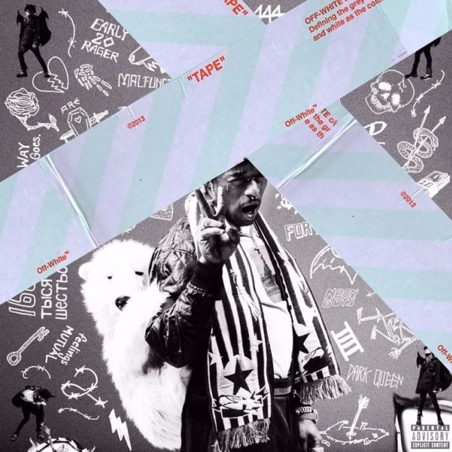

Album Review and Analysis

Lil Uzi Vert |LUV IS RAGE 2
Lil Uzi Vert’s highly anticipated debut, LUV is Rage 2, was released August 25, 2017 after months of hype and delay. With most hyped projects, audiences want to see for themselves if the music lived up to the hype surrounding it.
Lil Uzi Vert is a Philadelphia native who started rapping for attention and quickly received it with his stream-of-consciousness style flow and infectious, bass-heavy trap beats thanks to producers like Metro Boomin’, DP, and TM88. Uzi has garnered the respect and attention of many, including veteran musicians, Pharrell and Marilyn Manson. Conversely, his 2016 XXL Freshman Class Freestyle caused controversy and riled up the ire of many rap artists and hip hop fans. Let's get into it…
The album begins with the track “Two,” obviously referencing that this album is a sequel. In this song and in his music, the typical themes are referenced, Lil Uzi has more money than you, doesn’t give a fuck what his haters think, and has access to many women, including yours. The songs “444+222”, “Sauce It Up”, “No Sleep”, “For Real”, “Neon Guts”--pretty much the whole album--reflects these themes. Despite the typical hedonistic imagery evoked by Lil Uzi Vert’s lyrics, there are moments of reflection and some introspection. In those moments, he realizes the consequences of his actions.
What I liked. There are many things going on at once on this album, but the production, as with most of Uzi’s projects, was mostly consistent, hard-hitting, and enlivening. Producers like DJ Plugg (“For Real”), WondaGurl (“Feelings Mutual”, “How To Talk”), Pharrell (“Neon Guts”) Maaly Raw (“Early 20 Rager”, “Sauce It Up”), TM88 (“XO Tour Llif3”) and of course Don Cannon (“No Sleep”, “The Way Life Goes” and more) all do this album justice by providing dynamic, uptempo beats with layers of electronic and atmospheric sounds that add texture and enhance Lil Uzi Vert’s style and flow. He doesn’t seem to work on an official track that doesn’t suit him.
Songs like “The Way Life Goes”, “Feelings Mutual”, and “XO Tour Llif3”, are good at giving Lil Uzi Vert the space to candidly express his emotions and experiences concerning heartbreak and his attempts to numb the painful feelings. The tracks are accessible to the general audience, but maintain the uniqueness that Lil Uzi Vert has been credited for possessing.
What I didn't like. This album is unnecessarily long. There were tracks that, in my opinion, could’ve been left off to make a more cohesive, stronger album debut. Instead, there are about 3 or 4 songs (“Unfazed”, “X”, “Malfunction”, and “Two”) that add length to the album, but add no real quality. “Two” should’ve been a short ‘Intro’ and then maybe an ‘Outro’ instead of making it drag on into a full track. Also, why was “20 Min” a bonus track? That song should’ve been a main track, as the production and Lil Uzi’s flow and lyrics work well to create a rather unique and fun song. I will never understand the politics behind what labels choose to release and what they choose to delay.
Lil Uzi has a core fanbase that will accept all that he does, but to have lasting power in the industry, you have to be consistently good, not consistently the same. He has the ability to address different topics, and should show growth and change in his music rather than stagnancy. The producers literally save his lyrics from being unlistenable because of their production, instead of complimenting or enhancing lyrical prowess. I’m not sure if Lil Uzi wants longevity in the music industry, but at this rate, the buzz and controversy surrounding him because of his Luciferian interests is not going to keep him around, great music will. So he should work on improving the quality of his lyrical content.
Mediocre. I do enjoy a good amount of Lil Uzi Vert’s music. He is a captivating artist and performer who has a lively, honest, magnetic, and charming personality, which can be reflected in his music. However, I can’t say I enjoy this album as much as I enjoyed the tracks on LUV Is Rage and LUV is Rage 1.5. Despite a lifestyle framed by a fog of weed smoke, littered with Xanax pills, and coated with spilled double cups of Promethazine and Sprite, Lil Uzi Vert displays a carefree confidence I think he actually possesses when sober. I do admire that confidence, but for this album he shouldn’t have let overconfidence cloud sound musical judgment.
« Previous Next »